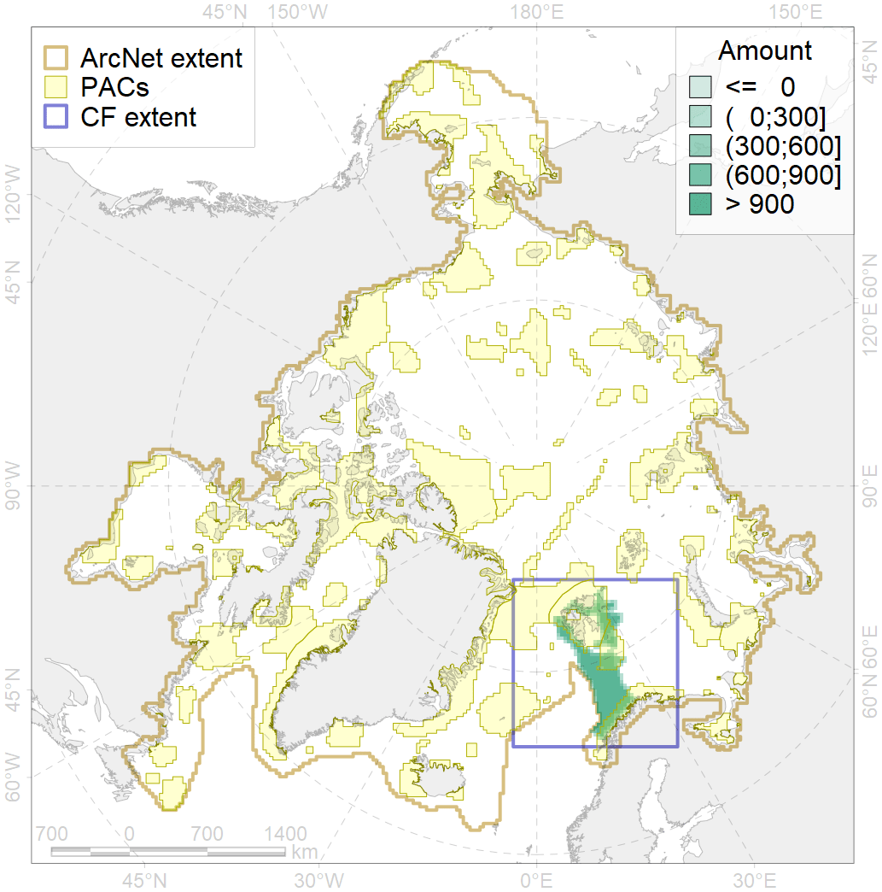
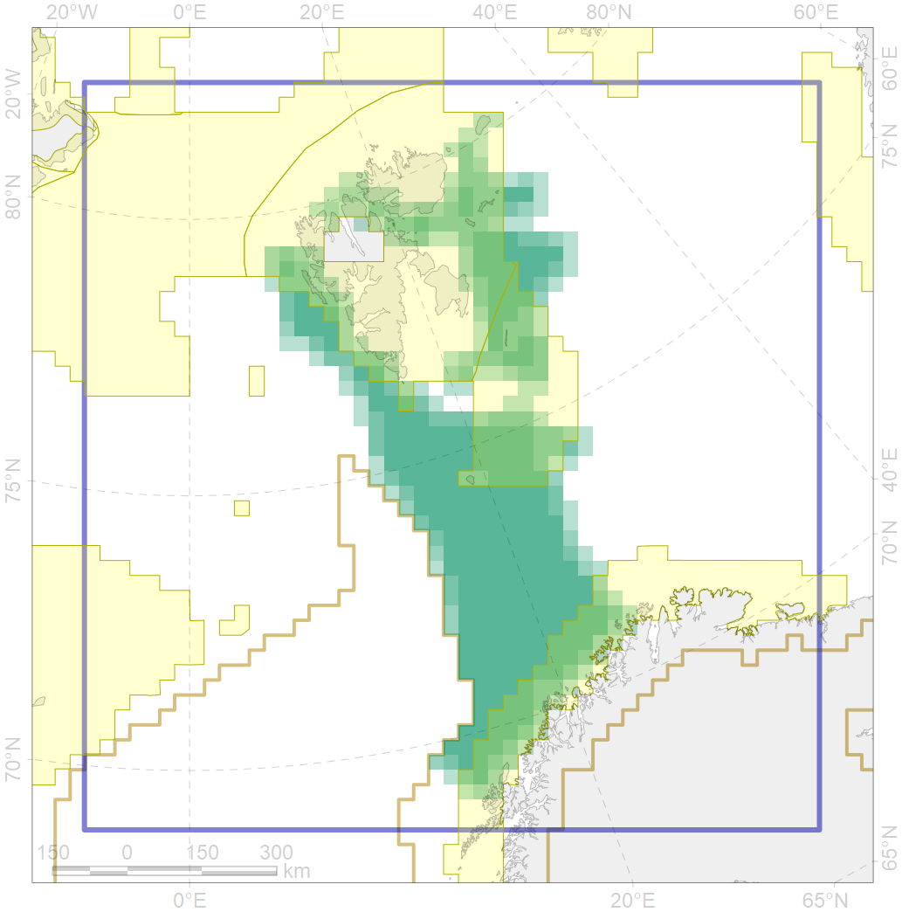

5061

| CF code | 5061 |
| CF name | Humpback whale summer feeding areas in Norway |
| Time Period | 1986-2015 |
| Source(s) | Stevick et al. 2006; Øien et al 2009; Ramirez-Martinez et al 2017; Klepikovsky 2017 |
| Seasonality | May-October |
| Depth Horizon | 0-300 |
| Methodology | Aerial and ship surveys |
| Use Restrictions | |
| Author Name | Filatova |
| Notes | |
| Scenario’s Target | 0.12 |
| Target Achievement | 0.430 (Scenario: 358.3%) |
| PAC | Share of the Total Amount within the PAC | Share of the Target Achievement for the ArcNet | PAC’s Contribution to the Target Achievement |
|---|---|---|---|
| 27 | 11.4%11.5% | 88.4%89.1% | 24.7%24.9% |
| 30 | 17.2%18.5% | 140.0%150.0% | 39.1%41.9% |
| 31 | 13.7%14.9% | 106.3%115.3% | 29.7%32.2% |
| inner | 42.3%44.8% | 334.6%354.3% | 93.4%98.9% |
| outer | 57.7%59.1% | 23.7%34.7% | 6.6%9.7% |
| † supplement values are for area consistence whereas principal values are for Accenter compatible gridded stats |